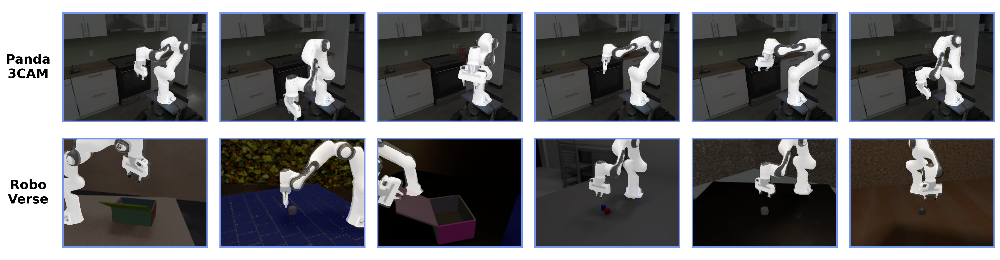
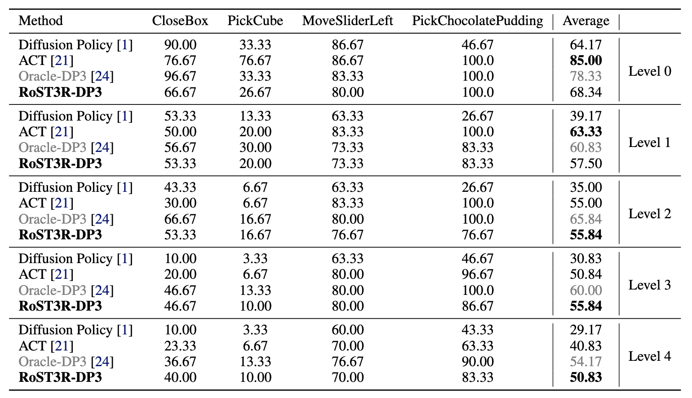
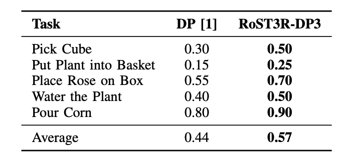

Abstract
3D scene representations offer stronger general-
ization for policy learning compared to 2D representations, yet
collecting such 3D data has required special sensors. Previous
methods for 3D reconstruction from video exist, but have
been unsuitable for robotic learning due to error and lack of
metric calibration. In this work, we demonstrate that 3D scene
representations can be reliably reconstructed from standard
2D RGB images, making it both accessible and practical for
robot learning. We propose a novel framework, RoST3R (Robot
MonST3R), that incrementally reconstructs dynamic 3D scenes
at metric scale from RGB images, enabling 3D-aware policy
learning in complex environments from only 2D inputs. At its
core, our approach estimates the robot’s pose during scene
reconstruction, registers its kinematic structure within the
environment, and builds a unified 3D scene representation.
This unified 3D representation offers two key benefits: it
enables policy learning at metric scale in a consistent world
frame—decoupling object and camera dynamics—and provides
a coherent model of the robot and environment to support fine-
grained spatial reasoning. Notably, while the input remains
2D, our approach generates a 3D-aware representation that
significantly improves generalization. Experiments show that
policies trained with this 3D representation outperform those
trained on 2D inputs, particularly in tasks involving environ-
mental variations, novel viewpoints and camera motion. In
simulation, our method outperforms 2D counterparts by 24.5%
under environmental variations and dynamic camera motion.
In real-world scenarios, it achieves a 29.5% performance
improvement.
Results - Robot Pose Estimation
Quantitatively our framework accurately estimates robot pose in real-world scenarios (Panda 3CAM) and under partial occlusion conditions (RoboVerse).
In each image, the robot mesh is projected onto the image using the pose estimated by our method.

Visualization of pose estimation
Simulation Results - RoboVerse
Quantitatively, Our RoST3R 3D representation demonstrates superior generalization ability compared to its 2D-based counterparts.

Generalization levels of evaluation on RoboVerse benchmark
Real World Results
Qualitative comparison of real-world task executions using Diffusion Policy (Left) and RoST3R-DP3 (Right), shown at 3× speed.
Quantitatively, Our method outperforms 2D-based Diffusion Policy by 29.5%, highlighting the importance of 3D reasoning capabilities.
